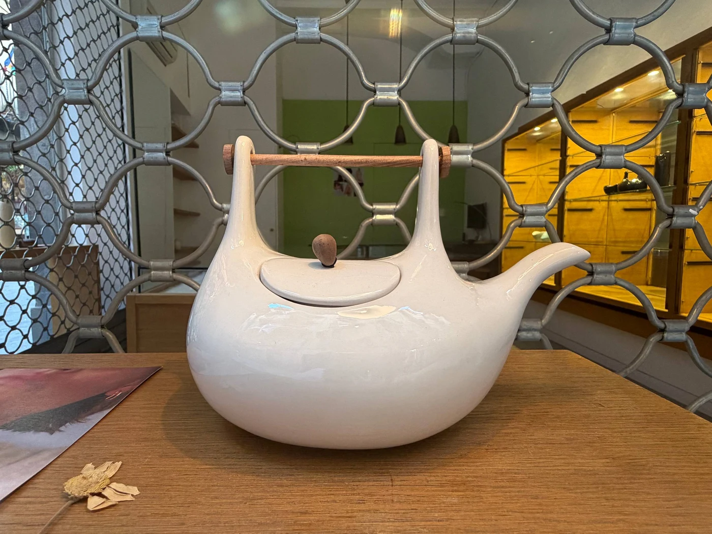

No. 01
Why Is This Teapot Beautiful?

I saw this teapot in the window of a store in Barcelona. I had already passed it by a few metres when something made me stop. No, not stop. Go back. I looked at it again and thought: this is beautiful. And then almost immediately: this is incredibly cute. Or, as a Japanese girl might call it, kawaii.
The teapot stayed in my mind. I kept thinking about it, and now I am writing this text. Basically I want to know what happens between seeing an object and experiencing it as beautiful.
George Santayana, in The Sense of Beauty, makes an interesting distinction. Beauty is not really a physical quality of an object. It is a pleasure that we experience in relation to it — a pleasure that becomes so attached to the object that we perceive the object itself as beautiful.
When we look at a painting, we rarely say, I am experiencing pleasure looking at this painting. We say, this painting is beautiful. So the pleasure has somehow been transferred onto the object.
What is this pleasure made of? What is the material of beauty? Colour, sound, shape, texture, taste… The sensory experience of an object as the most straightforward layer of perception.
What I notice first about this teapot is its softness. Not actual softness, the ceramic is hard, but visual softness. Its rounded body feels almost touchable and cozy. It isn't perfectly round, either. It doesn't seem interested in geometric perfection. It looks a little like a cloud, or perhaps a small boat.
The lid continues this feeling. It sits on top almost like a deck on that boat. It doesn't feel like a separate component placed onto the body. It seems to grow out of the same shape, as if the whole thing had been formed in one continuous gesture.
And then there is the thing that makes my eye stop: the wooden bar. One thin, straight line crossing this soft, rounded body. This is where the object becomes interesting. Until now, I have been looking at its individual sensory qualities, but there is another layer to it: composition, or the relationship between these elements.
There is almost a contradiction between the softness of the body and the rigidity of the wooden stick. Between the heavy, quiet mass of the teapot and this delicate horizontal line floating above it. The ceramic body needs the wooden line, and the wooden line needs the softness of the body around it. They make each other more noticeable.
If we flatten the teapot into a two-dimensional composition, the structure becomes even clearer. There is one large oval — the body — with a smaller oval inside it, the lid, then the small wooden form and, finally, one straight horizontal line: the handle. Round, round, round — line. The repetition creates rhythm; the line interrupts it.
There is unity, but also contrast. The composition is simple, but not boring. There is nothing to remove.
I think I figured out part of the mystery of this teapot. And I think I know what I want for my birthday. Pleasure shaped in ceramic, held together by a bit of wood, making a little sea of tea to sail away in.